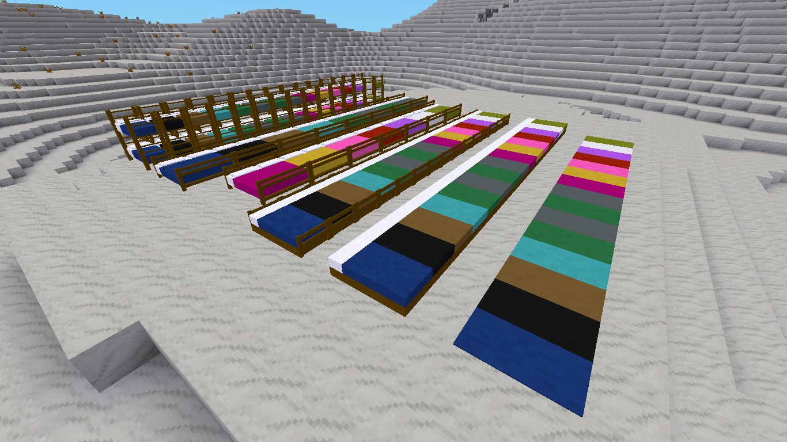
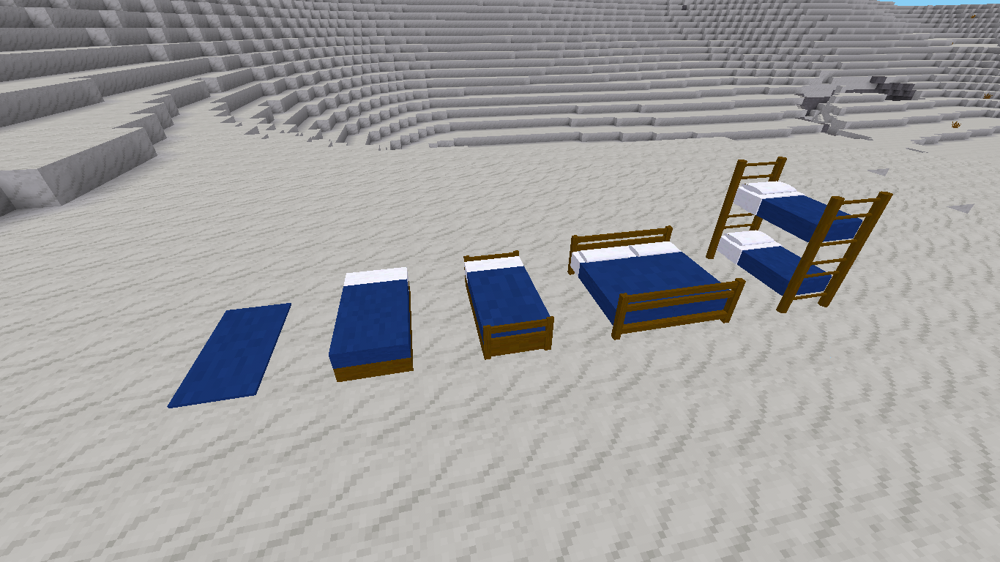

A comprehensive bed and spawn system for Luanti.
MyBeds replaces the standard bed behavior with a more rewarding system. Not only can you set your spawn point, but the quality of your bed now directly impacts your recovery.
Features
Recovery System: Heal while you sleep! Higher quality beds provide more health.
5 Levels of Comfort:
1. Sleeping Mat: +1 HP (Emergency use)
2. Standard Bed: +5 HP
3. Bunk Bed: +10 HP
4. Fancy Bed: +15 HP
5. King Size Bed: +20 HP (Full recovery)
Spawn Protection: Notifies you if your bed is destroyed or if someone tries to use a bed on your protected land.
Visual Flair: Gold heart particles appear when setting a spawn point or healing.
Multi-Part Beds: Includes logic for King Size and Bunk Beds that occupy multiple nodes correctly.
Colors
15 colors of each type of bed.
Configuration
| mybeds_enable_health | true | Enables/Disables healing while sleeping. |
| spawnpoint_msg | "Your spawn point is now set!" | Custom message for spawn setting. |
| beddestroyed_msg | "Your bed has been taken over or destroyed!" | Custom message for bed being destroyed setting. |


- Luanti Forum Link - My Beds - not on forum yet
- Github Link - Veiw Code
- Direct Download - mybeds.zip
- ContentDB - My Beds - not on CDB yet